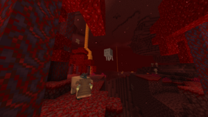
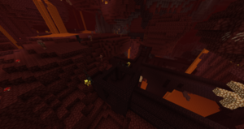
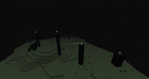
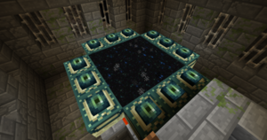
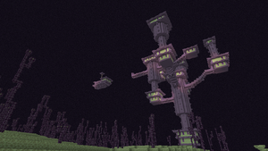

|
Dimensiones en Minecraft, ¿Qué son?
|
|
Actualmente hay 3 dimensiones: el mundo real (donde se juega normalmente), el Inframundo (también llamado Nether o Infierno) y el Fin (un isla flotante en la que se encuentra el dragón del Fin). En todas ellas está presente el Vacío. Mediante modificaciones se pueden añadir otros mundos.
|
|
|
El Nether es una dimensión inspirada en el Infierno, con mucho fuego, lagos y ríos de lava y criaturas peligrosas y poderosas. Se accede a través de portales de obsidiana.
|
|
|
Para entrar al Nether, el jugador debe construir o buscar un portal destruido del Nether en la superficie (si se crea en el End no funcionará). Para crear el portal, se debe construir un marco de obsidiana de un tamaño mínimo de 4x5 y máximo de 23x23. Una vez construido el marco, se activará con la ignición del marco con un mechero. Cuando el portal se ha activado, emitirá partículas púrpura.
Un portal activado permitirá que la mayoría de las entidades (excepto el Wither, el Enderdragón y las entidades montando alguna entidad) se transporten a un portal correspondiente en el Nether. El portal se destruirá si se destruye el marco, se explota el portal o se usa una cubeta o dispensador para colocar líquidos en el portal. Cerca de los portales en ruinas se puede encontrar un cofre con objetos de oro sin encantar o encantados, con la posibilidad de un 4% de encontrar una manzana dorada o manzana dorada encantada en uno de ellos.
|
|
|
|
Este lugar está formado, en su mayoría, por netherrack , bloques de magma y lava en forma de mares, lagos o cascadas. Las llamas que se encuentran o se crean en la netherrack son inextinguibles a pesar del paso del tiempo, y generalmente se encuentra estancias muy bien iluminadas (es raro encontrar un lugar técnicamente «oscuro» en el Nether). Aparte, también se puede encontrar piedras luminosas colgando en los techos de las cavernas y arena de almas, bloque usado para plantar verrugas del Nether, también usado para invocar al Wither. Otra de las características del Nether es que el agua se evapora al instante, por lo que no puedes crear ríos ni solidificar lava para hacer obsidianas.
El Nether tiene en su conjunto cinco biomas diferentes.
Raras veces son encontradas las Fortalezas del Nether, que, a diferencia de los bastiones o fortalezas de la Superficie, no tienen límite de número de estructuras posibles generadas por mundo. Consisten en enormes castillos hechos de ladrillos del Nether con pasillos en forma de puentes, llenos de criaturas como los esqueletos Wither, esqueletos, piglin zombificados, cubos de magma y blazes. Es en estas Fortalezas del Nether donde se pueden conseguir recursos como la verruga del Nether, lingotes de oro y monturas.
Los bastiones piglin son grandes estructuras que tiene la figura de una especie de castillo hecho mayormente de roca negra, habitada por piglins, piglins brutos, cubos de magma y hoglins donde se encuentran cofres con oro, diamantes, lingotes de netherita, etc.
|
| Una vista de un bosque carmesí con un hoglin y un ghast en el fondo |
| Una vista de una fortaleza del Nether |
|
|
|
- Si pones una cama en el Nether e intentas dormir, esta explotará.
- Sin embargo, un aldeano sí puede dormir en una cama.
- Por inhóspito que parezca se puede sobrevivir con cultivos, ganadería y caza de hoglins.
- Los únicos bloques encontrados tanto en el mundo normal como en el Nether son la grava, los champiñones marrones y rojos, la lava y los bloques de magma. En la actualización 1.16, se pueden encontrar bloques de hueso en el valle de arena de almas.
- Los botes pueden ser puestos en la lava, pero si el jugador intenta subirse, se quemará.
- Si subes a la superficie del Nether, encontrarás una llanura de lecho de roca que no tiene fin, y un cielo rojizo.
- En la versión 1.5 se aumenta la dificultad al escavar, es decir, al excavar recto encontrarás lava.
- En la versión 1.6 ahora las fortalezas del Nether tienen cofres.
- A partir de la versión 1.7 los portales se pueden hacer del tamaño que quieras, hasta un máximo de 23x23 bloques.
- A partir de la versión 1.10 también pueden aparecer endermans en el Nether.
- Al colocar un caldero en el nether, es posible llenarlo de agua.
|
El End o el Fin es una dimensión oscura y como su nombre lo dice es la dimensión final ya que este es el hogar del Enderdragón jefe final del juego, también de los Endermans y los shulkers.
|
|
|
Para acceder al End, el jugador debe encontrar y activar el portal del End, el cual se encuentra en una fortaleza.
El jugador tendrá que conseguir 12 perlas de ender matando endermans y después, usando polvo de blaze, convertirlas en ojos de ender. Se pueden utilizar estos ojos de ender para localizar una fortaleza lanzándolos en el aire y siguiendo la dirección en que vayan volando. Se advierte al jugador de crear varios ojos de ender, esto debido a que ocasionalmente se desvanecen al lanzarlos o se destruyen. Para activar el portal, hay que insertar un ojo de ender en cada uno de los huecos del marco de portal del End, 12 en total.
Un portal del End activado transportará al jugador inmediatamente a dicha dimensión. Dicho portal aparecerá en X=100, Y=49, Z=0, hacia el oeste en una plataforma de obsidiana de 5×5×1 generado ya sea dentro o encima de la isla, o bien cerca de la isla.
El End consta de una gran isla, rodeada por otras islas de menor dimensión. El espacio entre las islas periféricas y la central es de unos 1000 bloques.
El cielo sin estrellas y el Vacío del End están compuestos por un patrón estático en blanco. El End carece de ciclo de día y noche, al igual que el Nether; en su lugar hay una tenue luz continua. La mayoría de objetos y bloques funcionan igual que en la Superficie, excepto:
- Las camas explotarán cuando alguien intente utilizarlas.Lo mismo pasa con el nether
- La lava fluye más rápido en el End, igual que en el Nether, pero en una distancia de 3 como en la Superficie.
- Las brújulas son incapaces de encontrar el punto original de reaparición, ya que no se puede establecer en un lugar dentro de el End.
- Los relojes son incapaces de determinar la posición del sol y la luna.
- Los mapas hechos en el End muestran el mismo patrón rojo y gris como en el Nether.
- Los portales del Nether no se activarán en el End.
- Las anclas de reaparición explotarán al hacer click derecho sobre ellas.
Una vez dentro del End, la única forma de salir es derrotar al Enderdragón o morir. El dragón aparecerá naturalmente y volara alrededor de un número de pilares de obsidiana dispuestos de una manera circular; sobre cada uno de estos reside un Cristal del End, algunos protegidos por jaulas de barrotes, estos regeneran la salud del dragón. Para destruir estos cristales, uno debe escalar los pilares, o disparar los cristales de lejos con un arco u otros proyectiles, como bolas de nieve o huevos. Una vez derrotado, el dragón ender explotará, y creará un portal de salida, sobre el cual se encuentra un huevo de dragón. Además el dragón dará 70 niveles de experiencia en orbes al morir.
Una vez derrotado, el dragón puede reaparecer un número ilimitado de veces colocando cuatro cristales del End sobre el portal de salida.
Cuando el jugador entra al portal de salida del End, el poema del End y los créditos aparecerán, además de la "finalización" del Minecraft y la obtención del logro "Se acabó".
El jugador entonces reaparece en la Superficie y podría retornar al End a través del mismo portal. Éste permanecerá en el mismo estado en que el jugador lo haya dejado.
El jugador puede entrar en uno de los portal de salida del End que aparecen cada vez que el dragón es derrotado. Estas pasarelas sólo pueden introducirse mediante el uso de perlas de ender, élitros o nadando a velocidad con agua debido a la brecha de un bloque de altura entre bloques de bedrock. Ellos teletransportarán al jugador a las islas del extremo exterior.
Las islas exteriores, generan infinitamente cubiertas con un bosque de árboles coral. Uno puede encontrar ciudades en el End, sobre las islas, que tienen botín muy valioso.
|
|
Una foto del End. Se puede observar al dragón del End y los pilares de obsidiana que le regeneran la vida.
|
|
Un portal del End activado en una fortaleza.
|
|
Parte de las islas externas del End. Se puede ver una ciudad del End.
|
|
|
|
- El End -un cielo interminable y ruidoso con una masa central de piedra del end- parece ser una inversión de Nether, una cueva interminable llena de masas de aire.
- El End tiene su propia banda sonora, la cual solo se puede escuchar ahí.
- En el end no se puede cultivar con click derecho pero sin embargo si que se puede llevando hasta alli aldeanos granjeros y dandoles las condiciones de trabajo.
- Si se obtiene el efecto de visión nocturna, el cielo se volverá morado con una especie de estática cuando se mueve la cámara.
- Al tratar de dormir en está dimensión con una cama, esta explotará.
- También se puede hacer el portal del End sin necesidad de ir a la fortaleza, haciendo un cuadrado con los portales del End en cada lado debe haber 3 portales del End (sin incluir las esquinas) y finalmente agregar los ojos del Ender verticalmente.
|